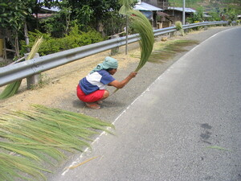

lampes 
/lampɔs/
v_rt.
“strike”
n.
club
Eng. club; truncheon; lash; whip; staff
Online dict status: -
Usage level: R
vt.
for someone (eglampes, miglampes/inlampes, agent, eg><ø-) to strike or beat something (eglampesan, inlampesan/miglampesan/piglampesan, location, eg><an-) with a stick or other instrument (iglampes, instrument, ig><ø-)
Wrd.Gloss: strike/beat
Eglampes te bula.
To strike a ball.
Eglampesan ku malasi ka me anaken ku su me makehal se me ulu ran.
I always beat my nieces for they are hardheaded.
Eng. spank; beat; smack; strike; switch; batter; whip
Tag. haplít; hampás; palúin
Ceb. bunal; hampak
Ilo.: malwén
OCM: Bodily Injuries (752), Techniques of Inculcation (861), Offenses Against the Person (683), Bodily Injuries (752)
Online dict status: -
Usage level: M
vi.
for someone (eglelampes, miglelampes/inlelampes, agent, eg><ø-rdpCV-) to randomly or keep on strike at things (eglelampesan, inlelampesan/miglelampesan/piglelampesan, location, eg><an-rdpCV-) with a purpose (iglelampes, inlelampes, instrument, ig-rdpCV-)
Eglelampes dè due ne warè bakbak.
Keep on striking even without frog.
Inlelampes ganna ni Mayjoy ka payong sikan naa ka nahupù.
Mayjoy stroke the umbrella earlier this and so it's destroyed.
Online dict status: -
Usage level: R
vi.
for someone (egpakalampes, nakalampes, patient, egpAkA-) to hit yourself on something
Nakalampes ad e te bula.
I'd hit ball already.
Eng. hit; bash
Online dict status: -
Usage level: M
Updated by: RJH,TME,RJH,QDL,RJH,RAA
Last updated: 15/Feb/2017
This page last updated: 03-Jan-2020
Copyright © 2009-2014, Matigsalug Language Christian Association, Inc